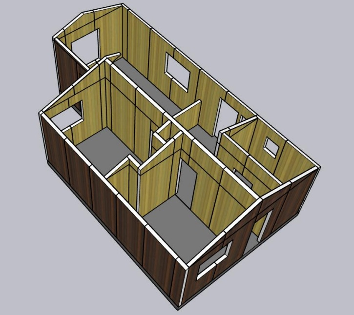

1. CONTEXTO DEL PROYECTO
| Parámetro |
Valor |
| Ubicación |
Freire, La Araucanía |
| Código SERVIU |
153025 |
| N° Viviendas |
133 unidades DFL-2 |
| Superficie/viv. |
42 m² |
| Presupuesto total |
135.692 UF |
| Costos directos |
107.521 UF |
| Costos invariantes |
58.703 UF (77%) |
| Costos variables |
25.105 UF (23%) |
Hallazgo clave: El 77% del presupuesto es
invariante, amplificando el impacto del ahorro sobre el 23%
industrializable.
2. ESPECIFICACIONES SIP
Paneles por vivienda:
| Tipo |
Cant. |
Espesor |
| TECH-163 (Techumbre) |
19 |
163mm |
| PER-106 (Perimetral) |
24 |
106mm |
| INT-95 (Interior) |
16 |
95mm |
| TOTAL |
59 |
- |
Total proyecto:
| Parámetro |
Valor |
| Total paneles |
7.847 unidades |
| Superficie total |
23.384 m² |
| Peso total |
423,8 ton (-97,7%) |
| Dimensión panel |
2,44 × 1,22 m |
| Peso unitario |
54 kg (18 kg/m²) |
| Tolerancia CNC |
±3 mm |
3. ANÁLISIS DE COSTOS
Componente Variable (23,3%):
| Ítem |
Tradicional |
SIP |
Δ |
| Materiales |
16.460 UF |
17.815 UF |
+8,2% |
| Mano obra |
7.358 UF |
3.973 UF |
-46% |
| Equipos |
1.822 UF |
729 UF |
-60% |
| Subtotal |
25.106 UF |
22.718 UF |
-9,5% |
Análisis Financiero:
| Indicador |
Valor |
| Ahorro total |
12.673,28 UF (-9,3%) |
| VAN (10 años) |
+3.184 UF |
| TIR |
18,4% |
| Tasa SERVIU |
8% |
| Viabilidad |
APROBADO |
MODELO 3D VIVIENDA TIPO 42 m²

Sistema constructivo industrializado | 59 paneles SIP | Tolerancia
±3mm | NCh 3744:2023
4. KPI PRODUCTIVIDAD
Plazo de Construcción:
Tradicional
18
meses
1.800 hrs/viv
SIP
9,5
meses
160 hrs/viv
↓ 47%
Mano de Obra:
Tradicional
0,029
m²/op-día
211,81 UF/viv
SIP
1,31
m²/op-día
114,38 UF/viv
↑ 4.517%
5. KPI CALIDAD Y AMBIENTE
Residuos RCD
-70%
836 → 251 m³
Emisiones CO₂
-34%
1.850 → 1.221 kg/m²
Consumo energía
-35%
85 → 55 kWh/m²
Merma materiales
-80%
15% → 3%
Aislamiento térmico
+81%
R 3,2 → 5,8
Aislamiento acústico
+32%
28 → 37 dB
Fijaciones
-67%
86 → 59 componentes
6. HABILITADOR BIM NID 400
- Software: Revit 2024 + Navisworks
-
Familias paramétricas: 3 tipos desarrollados
- Tiempo modelado: 60 → 25 hrs (-58%)
-
Clashes constructivos: 0 (vs 12 tradicional)
- Archivos IFC 4.0: 247 MB
- Precisión CNC: ±3mm garantizada
- Interoperabilidad: BuildingSMART
Lean Construction:
- Equipos montaje: 5 × 4 operarios
- Takt Time: 4,5 días/vivienda
- Capacidad: 22 viviendas/mes
- WIP optimizado: 6 unidades (-60%)
- PPC semanal: 88% (+35%)
- Muda eliminada: 77% (8% vs 35%)
7. HABILITADOR DfMA
Design for Manufacture and Assembly:
| Parámetro |
Antes |
Después |
Mejora |
| Componentes estructurales |
86 |
59 |
-31% |
| Tiempo ensamble |
45 días |
4,5 días |
-90% |
| Tipos herramientas |
12 |
3 |
-75% |
| Tasa defectos |
8% |
1,5% |
-81% |
Simplificación clave: 4 pernos estructurales por
panel vs clavado manual tradicional. Reducción de fijaciones: -67%
8. CRONOGRAMA
| Fase |
Duración |
Actividades |
| 1. Preparación |
2 meses |
Validación SERVIU
Moldes CNC (UF 35.000)
Logística (24
viajes)
Capacitación 60 inspectores
|
| 2. Montaje |
6 meses |
Piloto: 12 viv (6 d/u)
Producción: 88 viv (4,5 d/u)
Final:
33 viv
2 camiones/semana
|
| 3. Cierre |
1,5 meses |
Instalaciones finales
Entrega SERVIU
Buffer climático
|
| TOTAL |
9,5 meses |
vs 18 tradicional |
9. LOGÍSTICA Y PROVEEDOR
Proveedor Principal:
| Parámetro |
Detalle |
| Empresa |
Estructuras SIPHOUSE |
| Ubicación |
Lautaro (60 km) |
| Capacidad |
3.500 m²/mes |
| Precio cerrado |
UF 4,2/m² |
| Precio mercado |
UF 4,7/m² |
| Ahorro |
11% bajo mercado |
Plan de Entregas:
- Frecuencia: 2 camiones/semana
- Carga: 327 paneles/camión
- Total viajes: 24
- Duración: 7 semanas
- Buffer: 1 semana (clima)
10. NORMATIVA Y GESTIÓN
Marco Normativo:
-
NCh 3744:2023: Sistemas construcción con paneles
SIP
-
Decreto Exento 40/2024: Variantes constructivas
DFL-2
-
OGUC 2024: Zona F (Freire) cumple requisitos
- NCh 2434:2019: Acústica en edificaciones
Gestión de Riesgos:
| Riesgo |
Prob. |
Mitigación |
| Variación ±10% viv. |
Alta |
Cláusula ajuste auto. |
| Retraso paneles |
Baja |
Penalidad UF 50/día |
| Falla proveedor único |
Baja |
SIPTEC respaldo 80% |
| Rechazo inspectores |
Media |
Capacitación 40 hrs |